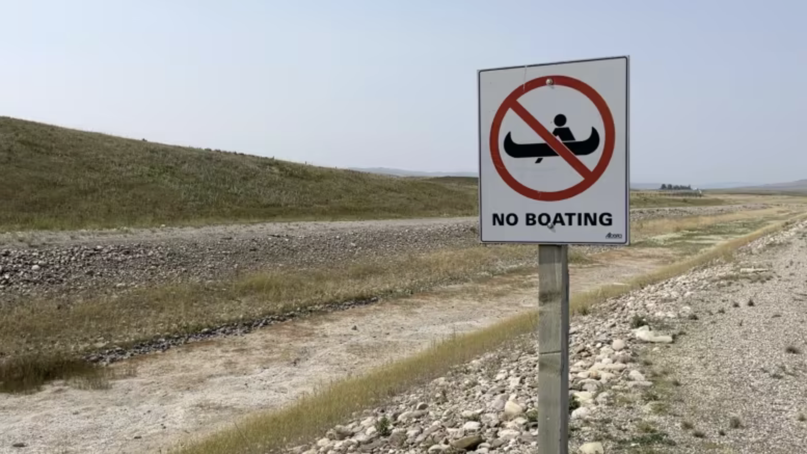
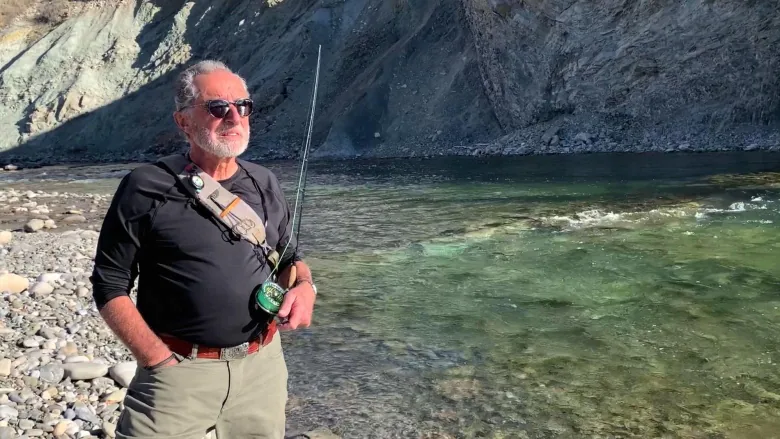
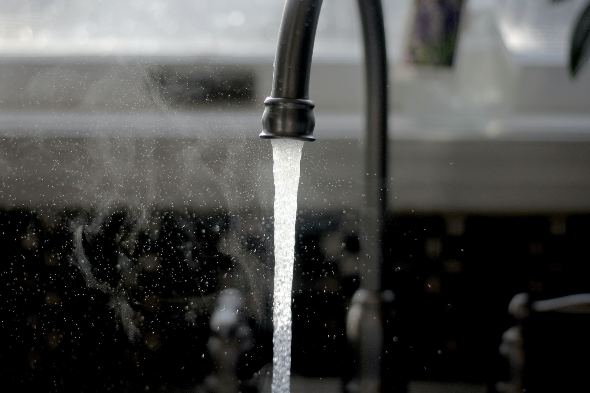

Intro
Timeline
Projections
Actionable Steps
Further Reading
Sources
Sources

Dwindling water supply leaves some southern Alberta farmers dry
Wet winter needed to feed next years' crops, say Alberta irrigators amid early water shut-off

Water shortages are a major risk of climate change. Alberta may already be seeing warning signs
More than a dozen agricultural disasters now declared as Alberta's south stays dry for months

Experts say talk on water conservation in Alberta should happen sooner rather than later